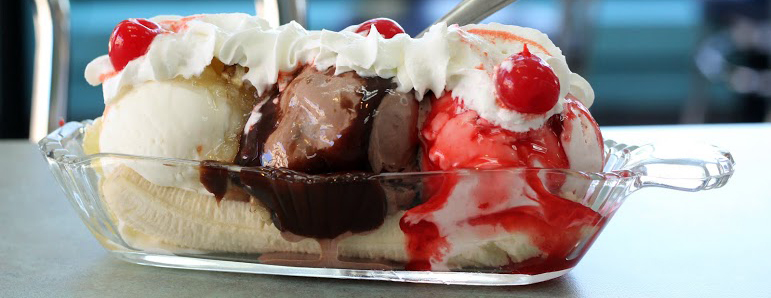
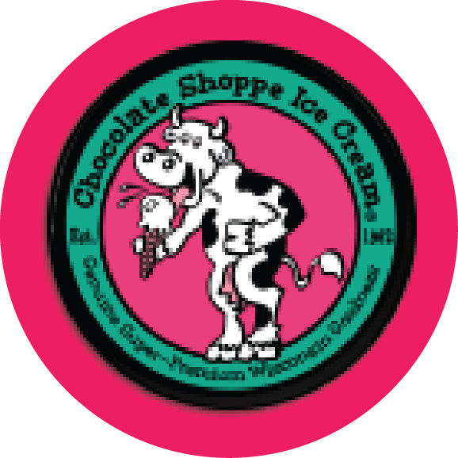

LOCATIONS
201 E State St,
West Lafayette, IN 47906
307 Sagamore Pkwy W,
West Lafayette, IN 47906
PROUDLY SERVING
Chocolate Shoppe
Ice Cream
FIRST TO WIN
Grand Master Ice Cream
Maker award presented
by the NICRA